En cours de traduction.
5.3 - GLM, GAM et plus
La plus grande force mais aussi la plus grande faiblesse du modèle de régression linéaire est que la prédiction est modélisée comme une somme pondérée des caractéristiques. De plus, le modèle linéaire vient avec de nombreuses autres hypothèses. La mauvaise nouvelle est (bien, ce n’est pas vraiment une nouveauté) que toutes ces hypothèses sont souvent violées dans la réalité : le résultat étant donné les caractéristiques peut avoir une distribution non gaussienne, les caractéristiques peuvent interagir et la relation entre les caractéristiques et le résultat peut être non linéaire. La bonne nouvelle est que la communauté statistique a développé une variété de modifications qui transforment le modèle de régression linéaire d’une simple lame en un couteau suisse.
Ce chapitre n’est définitivement pas votre guide définitif pour étendre les modèles linéaires. Plutôt, il sert de vue d’ensemble des extensions telles que les Modèles Linéaires Généralisés (GLM) et les Modèles Additifs Généralisés (GAM) et vous donne un peu d’intuition. Après lecture, vous devriez avoir une vue d’ensemble solide de comment étendre les modèles linéaires. Si vous voulez en apprendre davantage sur le modèle de régression linéaire en premier, je vous suggère de lire le chapitre sur les modèles de régression linéaire, si vous ne l’avez pas déjà fait.
Rappelons-nous de la formule d’un modèle de régression linéaire :
\[y=\beta_{0}+\beta_{1}x_{1}+\ldots+\beta_{p}x_{p}+\epsilon\]
Le modèle de régression linéaire suppose que le résultat ( y ) d’une instance peut être exprimé par une somme pondérée de ses ( p ) caractéristiques avec une erreur individuelle ( ) qui suit une distribution gaussienne. En forçant les données dans ce corset de formule, nous obtenons beaucoup d’interprétabilité du modèle. Les effets des caractéristiques sont additifs, ce qui signifie qu’il n’y a pas d’interactions, et la relation est linéaire, ce qui signifie qu’une augmentation d’une caractéristique d’une unité peut être directement traduite en une augmentation/diminution du résultat prédit. Le modèle linéaire nous permet de compresser la relation entre une caractéristique et le résultat attendu en un seul nombre, à savoir le poids estimé.
Mais une simple somme pondérée est trop restrictive pour de nombreux problèmes de prédiction du monde réel. Dans ce chapitre, nous allons apprendre trois problèmes du modèle classique de régression linéaire et comment les résoudre. Il existe de nombreux autres problèmes avec des hypothèses possiblement violées, mais nous nous concentrerons sur les trois présentés dans la figure suivante:
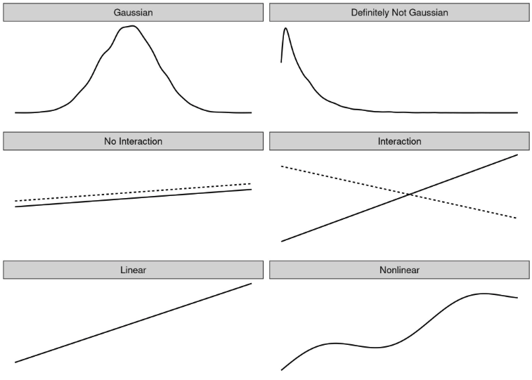
Il existe une solution à tous ces problèmes :
Problème : Le résultat cible \(y\) étant donné les caractéristiques ne suit pas une distribution gaussienne.
Exemple : Supposons que je veuille prédire combien de minutes je vais faire du vélo un jour donné. Comme caractéristiques, j’ai le type de journée, la météo, etc. Si j’utilise un modèle linéaire, il pourrait prédire des minutes négatives car il suppose une distribution gaussienne qui ne s’arrête pas à 0 minute. Aussi, si je veux prédire des probabilités avec un modèle linéaire, je peux obtenir des probabilités qui sont négatives ou supérieures à 1.
Solution : Modèles Linéaires Généralisés (GLMs).
Problème : Les caractéristiques interagissent.
Exemple : En moyenne, une légère pluie a un effet légèrement négatif sur mon envie de faire du vélo. Mais en été, pendant l’heure de pointe, j’apprécie la pluie, car alors tous les cyclistes du beau temps restent à la maison et j’ai les pistes cyclables pour moi ! C’est une interaction entre le temps et la météo que ne peut pas capturer un modèle purement additif.
Solution : Ajout manuel d’interactions.
Problème : La véritable relation entre les caractéristiques et ( y ) n’est pas linéaire.
Exemple : Entre 0 et 25 degrés Celsius, l’influence de la température sur mon envie de faire du vélo pourrait être linéaire, ce qui signifie qu’une augmentation de 0 à 1 degré provoque la même augmentation de l’envie de faire du vélo qu’une augmentation de 20 à 21. Mais à des températures plus élevées, ma motivation à faire du vélo se stabilise et diminue même - je n’aime pas faire du vélo quand il fait trop chaud.
Solutions : Modèles Additifs Généralisés (GAMs) ; transformation des caractéristiques.
Les solutions à ces trois problèmes sont présentées dans ce chapitre. De nombreuses autres extensions du modèle linéaire sont omises. Si je tentais de tout couvrir ici, le chapitre se transformerait rapidement en un livre dans un livre sur un sujet déjà couvert dans de nombreux autres livres. Mais puisque vous êtes déjà ici, j’ai fait un petit aperçu du problème plus solution pour les extensions de modèle linéaire, que vous pouvez trouver à la fin du chapitre. Le nom de la solution est destiné à servir de point de départ pour une recherche.
5.3.1 - Non-Gaussian Outcomes - GLMs
Le modèle de régression linéaire suppose que le résultat étant donné les caractéristiques d’entrée suit une distribution gaussienne. Cette hypothèse exclut de nombreux cas : le résultat peut également être une catégorie (cancer vs. sain), un décompte (nombre d’enfants), le temps jusqu’à la survenue d’un événement (temps jusqu’à la défaillance d’une machine) ou un résultat très biaisé avec quelques valeurs très élevées (revenu des ménages). Le modèle de régression linéaire peut être étendu pour modéliser tous ces types de résultats. Cette extension est appelée Modèles Linéaires Généralisés ou GLMs en abrégé. Tout au long de ce chapitre, j’utiliserai le nom GLM à la fois pour le cadre général et pour les modèles particuliers de ce cadre. Le concept central de tout GLM est : Conserver la somme pondérée des caractéristiques, mais autoriser des distributions de résultat non gaussiennes et connecter la moyenne attendue de cette distribution et la somme pondérée à travers une fonction éventuellement non linéaire. Par exemple, le modèle de régression logistique suppose une distribution de Bernoulli pour le résultat et relie la moyenne attendue et la somme pondérée en utilisant la fonction logistique.
Le GLM lie mathématiquement la somme pondérée des caractéristiques avec la valeur moyenne de la distribution supposée en utilisant la fonction de lien ( g ), qui peut être choisie de manière flexible en fonction du type de résultat.
\[g(E_Y(y|x))=\beta_0+\beta_1{}x_{1}+\ldots{}\beta_p{}x_{p}\]
Les GLMs se composent de trois composants : La fonction de lien \(g\), la somme pondérée \(X^T\beta\) (parfois appelée prédicteur linéaire) et une distribution de probabilité de la famille exponentielle qui définit \(E_Y\).
La famille exponentielle est un ensemble de distributions qui peuvent être écrites avec la même formule (paramétrée) incluant un exposant, la moyenne et la variance de la distribution et d’autres paramètres. Je ne vais pas entrer dans les détails mathématiques car c’est un très grand univers en soi que je ne souhaite pas aborder. Wikipedia a une liste ordonnée des distributions de la famille exponentielle. N’importe quelle distribution de cette liste peut être choisie pour votre GLM. En fonction du type de résultat que vous souhaitez prédire, choisissez une distribution adaptée. Le résultat est-il un décompte de quelque chose (par exemple, le nombre d’enfants vivant dans un ménage) ? Alors la distribution de Poisson pourrait être un bon choix. Le résultat est-il toujours positif (par exemple, le temps entre deux événements) ? Alors la distribution exponentielle pourrait être un bon choix.
Considérons le modèle linéaire classique comme un cas particulier d’un GLM. La fonction de lien pour la distribution gaussienne dans le modèle linéaire classique est simplement la fonction identité. La distribution gaussienne est paramétrée par les paramètres de moyenne et de variance. La moyenne décrit la valeur que nous attendons en moyenne et la variance décrit combien les valeurs varient autour de cette moyenne. Dans le modèle linéaire, la fonction de lien relie la somme pondérée des caractéristiques à la moyenne de la distribution gaussienne.
Dans le cadre du GLM, ce concept se généralise à toute distribution (de la famille exponentielle) et à des fonctions de lien arbitraires. Si \(y\) est un décompte de quelque chose, comme le nombre de cafés que quelqu’un boit un jour donné, nous pourrions le modéliser avec un GLM avec une distribution de Poisson et le logarithme naturel comme fonction de lien :
\[ln(E_Y(y|x))=x^{T}\beta\]
Le modèle de régression logistique est également un GLM qui suppose une distribution de Bernoulli et utilise la fonction logit comme fonction de lien. La moyenne de la distribution binomiale utilisée dans la régression logistique est la probabilité que \(y\) soit 1.
\[x^{T}\beta=ln\left(\frac{E_Y(y|x)}{1-E_Y(y|x)}\right)=ln\left(\frac{P(y=1|x)}{1-P(y=1|x)}\right)\]
Et si nous résolvons cette équation pour avoir \(P(y=1)\) d’un côté, nous obtenons la formule de la régression logistique :
\[P(y=1)=\frac{1}{1+exp(-x^{T}\beta)}\]
Chaque distribution de la famille exponentielle a une fonction de lien canonique qui peut être dérivée mathématiquement de la distribution. Le cadre GLM permet de choisir la fonction de lien indépendamment de la distribution. Comment choisir la bonne fonction de lien ? Il n’y a pas de recette parfaite. Vous prenez en compte les connaissances sur la distribution de votre cible, mais aussi des considérations théoriques et la manière dont le modèle s’adapte à vos données réelles. Pour certaines distributions, la fonction de lien canonique peut conduire à des valeurs qui sont invalides pour cette distribution. Dans le cas de la distribution exponentielle, la fonction de lien canonique est l’inverse négatif, ce qui peut conduire à des prédictions négatives qui sont en dehors du domaine de la distribution exponentielle. Puisque vous pouvez choisir n’importe quelle fonction de lien, la solution simple est de choisir une autre fonction qui respecte le domaine de la distribution.
Exemples
J’ai simulé un ensemble de données sur le comportement de consommation de café pour souligner le besoin de GLMs. Supposons que vous ayez collecté des données sur votre comportement quotidien de consommation de café. Si vous n’aimez pas le café, prétendez qu’il s’agit de thé. En plus du nombre de tasses, vous enregistrez votre niveau de stress actuel sur une échelle de 1 à 10, comment vous avez bien dormi la nuit précédente sur une échelle de 1 à 10 et si vous avez dû travailler ce jour-là. L’objectif est de prédire le nombre de cafés étant donné les caractéristiques stress, sommeil et travail. J’ai simulé des données pour 200 jours. Le stress et le sommeil ont été tirés uniformément entre 1 et 10 et le travail oui/non a été tiré avec une chance de 50/50 (quelle vie !). Pour chaque jour, le nombre de cafés a ensuite été tiré d’une distribution de Poisson, modélisant l’intensité ( ) (qui est aussi la valeur attendue de la distribution de Poisson) comme une fonction des caractéristiques sommeil, stress et travail. Vous pouvez deviner où cette histoire va mener : “Hé, essayons de modéliser ces données avec un modèle linéaire … Oh ça ne fonctionne pas … Essayons un GLM avec une distribution de Poisson … SURPRISE ! Maintenant ça fonctionne !”. J’espère ne pas avoir trop gâché l’histoire pour vous.
Regardons la distribution de la variable cible, le nombre de cafés pour un jour donné.
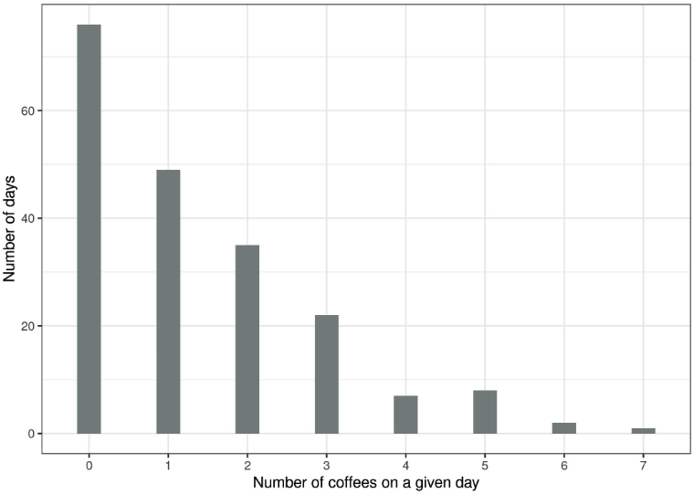
Sur r tab[1,2] des r n jours, vous n’avez pas bu de café du tout et le jour le plus extrême, vous avez bu r tab[nrow(tab),1] cafés. Utilisons naïvement un modèle linéaire pour prédire le nombre de cafés en utilisant le niveau de sommeil, le niveau de stress et le travail oui/non comme caractéristiques. Qu’est-ce qui peut mal tourner lorsque nous supposons à tort une distribution gaussienne ? Une mauvaise hypothèse peut invalider les estimations, en particulier les intervalles de confiance des poids. Un problème plus évident est que les prédictions ne correspondent pas au domaine “autorisé” du résultat réel, comme le montre la figure suivante.
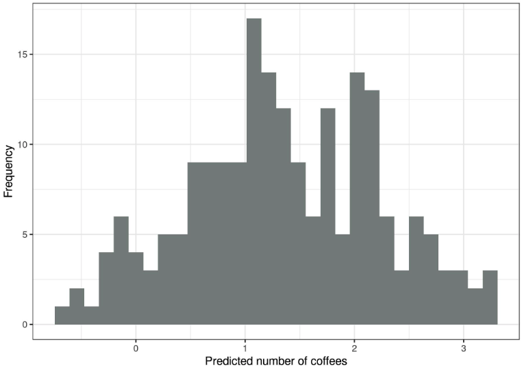
Le modèle linéaire n’a pas de sens, car il prédit un nombre négatif de cafés. Ce problème peut être résolu avec les Modèles Linéaires Généralisés (GLMs). Nous pouvons changer la fonction de lien et la distribution supposée. Une possibilité est de conserver la distribution gaussienne et d’utiliser une fonction de lien qui conduit toujours à des prédictions positives telles que le lien logarithmique (l’inverse est la fonction exp) au lieu de la fonction identité. Encore mieux : Nous choisissons une distribution qui correspond au processus de génération des données et une fonction de lien appropriée. Puisque le résultat est un décompte, la distribution de Poisson est un choix naturel, accompagnée du logarithme comme fonction de lien. Dans ce cas, les données ont même été générées avec la distribution de Poisson, donc le GLM de Poisson est le choix parfait. Le GLM de Poisson ajusté conduit à la distribution suivante des valeurs prédites :
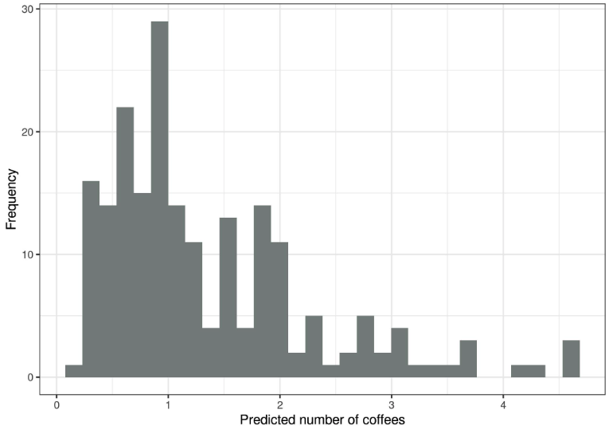
Plus aucun nombre négatif de café, cela semble bien meilleur.
Interprétation des poids de GLM
La distribution supposée, combinée à la fonction de lien, détermine comment les poids des caractéristiques estimés sont interprétés. Dans l’exemple du comptage de cafés, j’ai utilisé un GLM avec une distribution de Poisson et un lien logarithmique, ce qui implique la relation suivante entre le résultat attendu et les caractéristiques stress (\(str\)), sommeil (\(slp\)) et travail (\(wrk\)).
\[ln(E(\text{coffee}|\text{str},\text{slp},\text{wrk}))=\beta_0+\beta_{\text{str}}x_{\text{str}}+\beta_{\text{slp}}x_{\text{slp}}+\beta_{\text{wrk}}x_{\text{wrk}}\]
Pour interpréter les poids, nous inversons la fonction de lien afin de pouvoir interpréter l’effet des caractéristiques sur le résultat attendu et non sur le logarithme du résultat attendu.
\[E(\text{coffee}|\text{str},\text{slp},\text{wrk})=exp(\beta_0+\beta_{\text{str}}x_{\text{str}}+\beta_{\text{slp}}x_{\text{slp}}+\beta_{\text{wrk}}x_{\text{wrk}})\]
Puisque tous les poids sont dans la fonction exponentielle, l’interprétation de l’effet n’est pas additive, mais multiplicative, car exp(a + b) est exp(a) multiplié par exp(b). Le dernier élément pour l’interprétation est les poids réels de l’exemple jouet. Le tableau suivant répertorie les poids estimés et exp(poids) avec l’intervalle de confiance à 95 % :
Augmenter le niveau de stress d’un point multiplie le nombre de cafés attendu par le facteur r round(cc["stress", "exp.beta"], 2). Augmenter la qualité du sommeil d’un point multiplie le nombre de cafés attendu par le facteur r round(cc["sleep", "exp.beta"], 2). Le nombre prévu de cafés lors d’un jour de travail est en moyenne r round(cc["workYES", "exp.beta"], 2) fois le nombre de cafés lors d’un jour de repos. En résumé, plus le stress est grand, moins le sommeil est bon et plus le travail est abondant, plus la consommation de café est élevée.
Dans cette section, vous avez appris un peu sur les Modèles Linéaires Généralisés qui sont utiles lorsque la cible ne suit pas une distribution gaussienne. Ensuite, nous examinerons comment intégrer les interactions entre deux caractéristiques dans le modèle de régression linéaire.
5.3.2 - Interactions
Le modèle de régression linéaire suppose que l’effet d’une caractéristique est le même, indépendamment des valeurs des autres caractéristiques (= pas d’interactions). Mais souvent, il existe des interactions dans les données. Pour prédire le nombre de vélos loués, il peut y avoir une interaction entre la température et le fait qu’il s’agisse ou non d’un jour ouvrable. Peut-être que, lorsque les gens doivent travailler, la température n’influence pas beaucoup le nombre de vélos loués, car les gens vont faire du vélo pour se rendre au travail quoi qu’il arrive. Les jours de congé, beaucoup de gens font du vélo pour le plaisir, mais seulement quand il fait assez chaud. En ce qui concerne les vélos de location, on pourrait s’attendre à une interaction entre la température et les jours ouvrables.
Comment pouvons-nous amener le modèle linéaire à inclure des interactions ? Avant d’ajuster le modèle linéaire, ajoutez une colonne à la matrice de caractéristiques qui représente l’interaction entre les caractéristiques et ajustez le modèle comme d’habitude. La solution est élégante d’une certaine manière, car elle ne nécessite aucun changement du modèle linéaire, seulement des colonnes supplémentaires dans les données. Dans l’exemple du jour ouvrable et de la température, nous ajouterions une nouvelle caractéristique qui a des zéros pour les jours non ouvrables, sinon elle a la valeur de la caractéristique de température, en supposant que le jour ouvrable est la catégorie de référence.
Supposons que nos données ressemble à ceci :
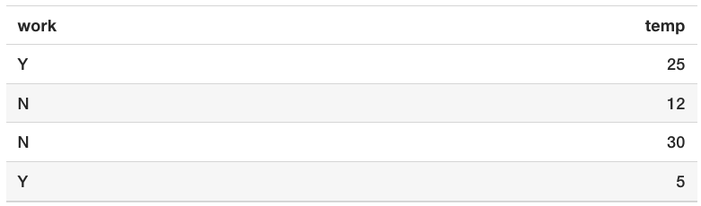
La matrice de données utilisée par le modèle linéaire semble légèrement différente. Le tableau suivant montre à quoi ressemblent les données préparées pour le modèle lorsque nous ne spécifions aucune interaction. Normalement, cette transformation est effectuée automatiquement par tout logiciel statistique.
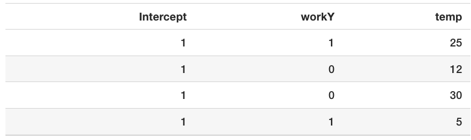
La première colonne est le terme d’interception. La deuxième colonne code la caractéristique catégorielle, avec 0 pour la catégorie de référence et 1 pour l’autre. La troisième colonne contient la température.
Si nous souhaitons que le modèle linéaire prenne en compte l’interaction entre la température et la caractéristique de jour ouvrable, nous devons ajouter une colonne pour cette interaction.
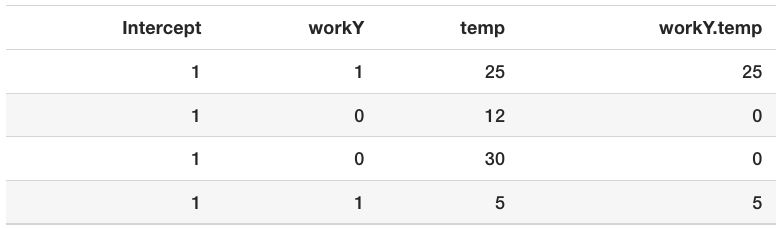
La nouvelle colonne “workY.temp” capture l’interaction entre les caractéristiques jour ouvrable (work) et température (temp). Cette nouvelle colonne de caractéristique est zéro pour une instance si la caractéristique travail est dans la catégorie de référence (“N” pour non jour ouvrable), sinon elle prend les valeurs de la caractéristique de température des instances. Avec ce type de codage, le modèle linéaire peut apprendre un effet linéaire différent de la température pour les deux types de jours. C’est l’effet d’interaction entre les deux caractéristiques. Sans un terme d’interaction, l’effet combiné d’une caractéristique catégorielle et d’une caractéristique numérique peut être décrit par une ligne qui est déplacée verticalement pour les différentes catégories. Si nous incluons l’interaction, nous permettons à l’effet des caractéristiques numériques (la pente) d’avoir une valeur différente dans chaque catégorie.
L’interaction de deux caractéristiques catégorielles fonctionne de manière similaire. Nous créons des caractéristiques supplémentaires qui représentent des combinaisons de catégories. Voici des données artificielles contenant le jour ouvrable (work) et une caractéristique météorologique catégorielle (wthr) :
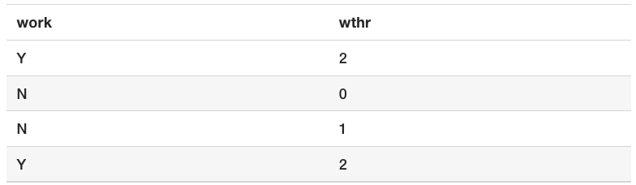
Ensuite, nous incluons les termes d’interaction :
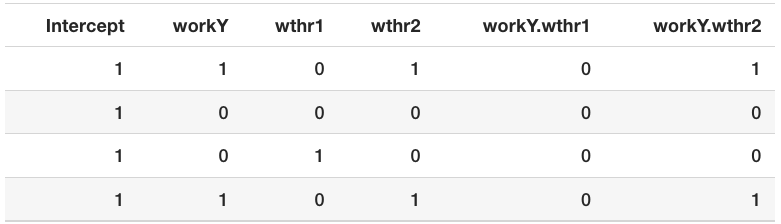
La première colonne sert à estimer l’interception. La deuxième colonne est la caractéristique de travail codée. Les colonnes trois et quatre sont pour la caractéristique météorologique, qui nécessite deux colonnes car vous avez besoin de deux poids pour capturer l’effet pour trois catégories, dont l’une est la catégorie de référence. Le reste des colonnes capture les interactions. Pour chaque catégorie des deux caractéristiques (sauf pour les catégories de référence), nous créons une nouvelle colonne de caractéristique qui est 1 si les deux caractéristiques ont une certaine catégorie, sinon 0.
Pour deux caractéristiques numériques, la colonne d’interaction est encore plus facile à construire : nous multiplions simplement les deux caractéristiques numériques.
Il existe des approches pour détecter et ajouter automatiquement des termes d’interaction. L’une d’elles peut être trouvée dans le chapitre RuleFit. L’algorithme RuleFit extrait d’abord les termes d’interaction puis estime un modèle de régression linéaire incluant les interactions.
Example
Revenons à la tâche de prédiction de location de vélos que nous avons déjà modélisée dans le chapitre sur le modèle linéaire. Cette fois, nous considérons également une interaction entre la température et la caractéristique du jour ouvrable. Cela aboutit aux poids estimés et aux intervalles de confiance suivants.
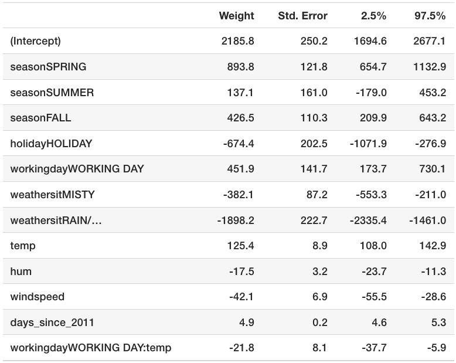
L’effet d’interaction supplémentaire est négatif (r round(lm_summary_print['workingdayWORKING DAY:temp','Estimate'], 1)) et diffère significativement de zéro, comme le montre l’intervalle de confiance à 95%, qui n’inclut pas zéro. D’ailleurs, les données ne sont pas iid, car les jours proches les uns des autres ne sont pas indépendants les uns des autres. Les intervalles de confiance pourraient être trompeurs, prenez-le donc avec des pincettes. Le terme d’interaction change l’interprétation des poids des caractéristiques impliquées. La température a-t-elle un effet négatif étant donné qu’il s’agit d’un jour ouvrable ? La réponse est non, même si le tableau le suggère à un utilisateur non formé. Nous ne pouvons pas interpréter le poids de l’interaction “workingdayWORKING DAY:temp” isolément, car l’interprétation serait : “Tout en laissant inchangées toutes les autres valeurs des caractéristiques, augmenter l’effet d’interaction de la température pour un jour ouvrable diminue le nombre prévu de vélos.” Mais l’effet d’interaction ne s’ajoute qu’à l’effet principal de la température. Supposons qu’il s’agisse d’un jour ouvrable et que nous voulions savoir ce qui se passerait si la température était plus chaude de 1 degré aujourd’hui. Alors nous devons additionner à la fois les poids pour “temp” et “workingdayWORKING DAY:temp” pour déterminer de combien l’estimation augmente.
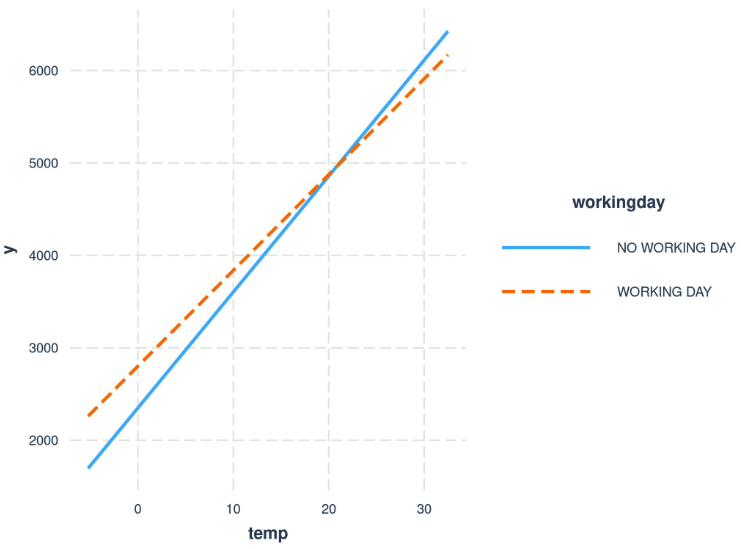
5.3.3 - Nonlinear Effects - GAMs
Le monde n’est pas linéaire
La linéarité dans les modèles linéaires signifie que, quelle que soit la valeur qu’une instance possède dans une caractéristique particulière, augmenter la valeur d’une unité a toujours le même effet sur le résultat prédit. Est-il raisonnable de supposer qu’augmenter la température d’un degré à 10 degrés Celsius a le même effet sur le nombre de vélos de location qu’augmenter la température quand elle atteint déjà 40 degrés ? Intuitivement, on s’attend à ce qu’augmenter la température de 10 à 11 degrés Celsius ait un effet positif sur les locations de vélos et de 40 à 41 un effet négatif, ce qui est également le cas, comme vous le verrez, dans de nombreux exemples tout au long du livre. La caractéristique de la température a un effet linéaire et positif sur le nombre de vélos de location, mais à un certain point, cet effet s’aplatit et a même un effet négatif à des températures élevées. Le modèle linéaire ne s’en préoccupe pas, il trouvera consciencieusement le meilleur plan linéaire (en minimisant la distance euclidienne).
Vous pouvez modéliser des relations non linéaires en utilisant l’une des techniques suivantes :
- Transformation simple de la caractéristique (par ex. logarithme)
- Catégorisation de la caractéristique
- Modèles Additifs Généralisés (GAMs)
Avant de détailler chaque méthode, commençons par un exemple qui illustre ces trois techniques. J’ai pris le jeu de données de location de vélos et entraîné un modèle linéaire avec uniquement la caractéristique de la température pour prédire le nombre de vélos de location. La figure suivante montre la pente estimée avec : le modèle linéaire standard, un modèle linéaire avec la température transformée (logarithme), un modèle linéaire traitant la température comme une caractéristique catégorielle et utilisant des splines de régression (GAM).
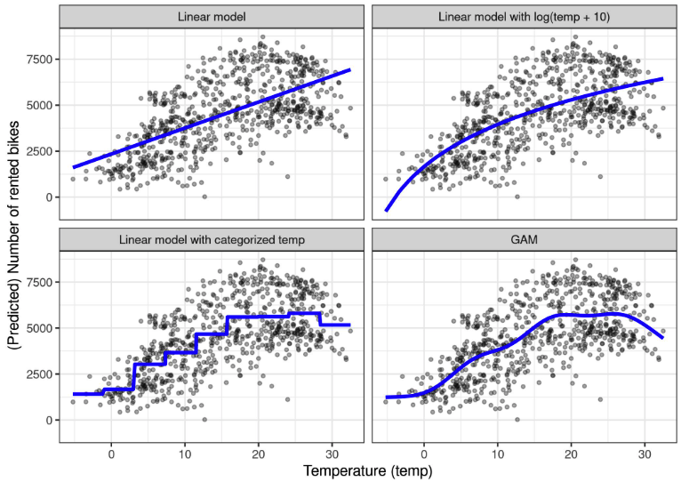
Transformation de caractéristique
Souvent, le logarithme de la caractéristique est utilisé comme transformation. Utiliser le logarithme indique que chaque augmentation de température de 10 fois a le même effet linéaire sur le nombre de vélos, donc passer de 1 degré Celsius à 10 degrés Celsius a le même effet que de passer de 0,1 à 1 (ce qui semble incorrect). D’autres exemples de transformations de caractéristiques sont la racine carrée, la fonction carrée et la fonction exponentielle. Utiliser une transformation de caractéristique signifie que vous remplacez la colonne de cette caractéristique dans les données par une fonction de la caractéristique, comme le logarithme, et ajustez le modèle linéaire comme d’habitude. Certains programmes statistiques vous permettent également de spécifier des transformations dans l’appel du modèle linéaire. Vous pouvez être créatif lorsque vous transformez la caractéristique. L’interprétation de la caractéristique change selon la transformation sélectionnée. Si vous utilisez une transformation logarithmique, l’interprétation dans un modèle linéaire devient : “Si le logarithme de la caractéristique est augmenté d’un, la prédiction est augmentée du poids correspondant.” Lorsque vous utilisez un GLM avec une fonction de lien qui n’est pas la fonction identité, alors l’interprétation devient plus compliquée, car vous devez incorporer les deux transformations dans l’interprétation (sauf quand elles se neutralisent mutuellement, comme log et exp, alors l’interprétation devient plus facile).
Catégorisation des caractéristiques
Une autre possibilité pour obtenir un effet non linéaire est de discrétiser la caractéristique ; la transformer en une caractéristique catégorielle. Par exemple, vous pourriez découper la caractéristique de température en 20 intervalles avec les niveaux \([-10, -5)\), \([-5, 0)\), … et ainsi de suite. Lorsque vous utilisez la température catégorisée au lieu de la température continue, le modèle linéaire estimerait une fonction en escalier car chaque niveau obtient sa propre estimation. Le problème avec cette approche est qu’elle nécessite plus de données, qu’elle est plus susceptible de surajuster et qu’il n’est pas clair comment discrétiser la caractéristique de manière significative (intervalle équidistant ou quantiles ? combien d’intervalles ?). Je n’utiliserais la discrétisation que s’il y a un cas très solide pour cela. Par exemple, pour rendre le modèle comparable à une autre étude.
Modèles Additifs Généralisés (GAMs : Generalized Additive Models)
Pourquoi ne pas ‘simplement’ permettre au modèle linéaire (généralisé) d’apprendre des relations non linéaires ? C’est la motivation derrière les GAMs. Les GAMs assouplissent la restriction selon laquelle la relation doit être une simple somme pondérée, et supposent à la place que le résultat peut être modélisé par une somme de fonctions arbitraires de chaque caractéristique. Mathématiquement, la relation dans un GAM se présente comme ceci :
\[g(E_Y(y|x))=\beta_0+f_1(x_{1})+f_2(x_{2})+\ldots+f_p(x_{p})\]
La formule est similaire à celle du GLM avec la différence que le terme linéaire \(\beta_j{}x_{j}\) est remplacé par une fonction plus flexible \(f_j(x_{j})\). Le cœur d’un GAM est toujours une somme des effets des caractéristiques, mais vous avez la possibilité de permettre des relations non linéaires entre certaines caractéristiques et la sortie. Les effets linéaires sont également couverts par le cadre, car pour les caractéristiques à traiter de manière linéaire, vous pouvez limiter leur \(f_j(x_{j})\) uniquement à prendre la forme de \(x_{j}\beta_j\).
La grande question est comment apprendre des fonctions non linéaires. La réponse s’appelle “splines” ou “fonctions spline”. Les splines sont des fonctions qui sont construites à partir de fonctions de base plus simples. Les splines peuvent être utilisées pour approximer d’autres fonctions plus complexes. Un peu comme empiler des briques Lego pour construire quelque chose de plus complexe. Il existe un nombre déroutant de façons de définir ces fonctions de base spline. Si vous êtes intéressé à en savoir plus sur toutes les manières de définir les fonctions de base, je vous souhaite bonne chance dans votre voyage. Je ne vais pas entrer dans les détails ici, je vais juste construire une intuition. Ce qui m’a personnellement le plus aidé à comprendre les splines était de visualiser les fonctions de base individuelles et de regarder comment la matrice de données est modifiée. Par exemple, pour modéliser la température avec des splines, nous supprimons la caractéristique de température des données et la remplaçons par, disons, 4 colonnes, chacune représentant une fonction de base spline. Habituellement, vous auriez plus de fonctions de base spline, j’ai seulement réduit le nombre à des fins d’illustration. La valeur pour chaque instance de ces nouvelles caractéristiques de base spline dépend des valeurs de température des instances. Avec tous les effets linéaires, le GAM estime également ces poids spline. Les GAMs introduisent également un terme de pénalité pour les poids pour les garder proches de zéro. Cela réduit effectivement la flexibilité des splines et réduit le surajustement. Un paramètre de lissage couramment utilisé pour contrôler la flexibilité de la courbe est ensuite ajusté via la validation croisée. En ignorant le terme de pénalité, la modélisation non linéaire avec des splines est une ingénierie de caractéristiques sophistiquée.
Dans l’exemple où nous prédisons le nombre de vélos avec un GAM en utilisant uniquement la température, la matrice des caractéristiques du modèle ressemble à ceci :
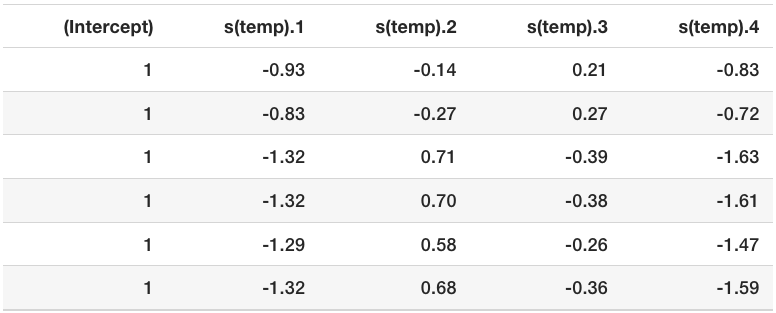
Chaque ligne représente une instance individuelle des données (un jour). Chaque colonne de base spline contient la valeur de la fonction de base spline aux valeurs de température particulières. La figure suivante montre à quoi ressemblent ces fonctions de base spline :
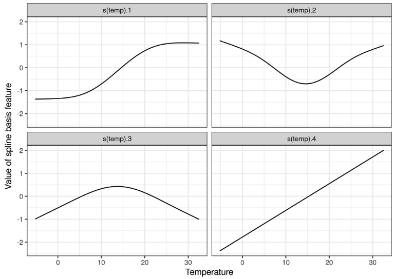
Le modèle GAM attribue des poids à chaque caractéristique de base de spline de température :
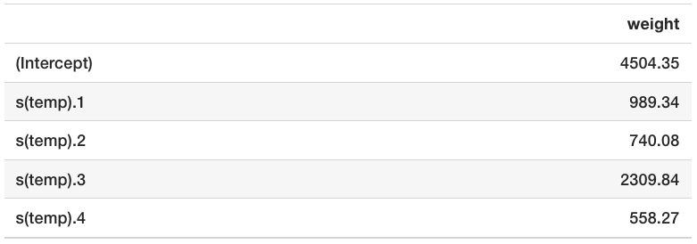
Et la courbe réelle, qui résulte de la somme des fonctions de base de spline pondérées avec les poids estimés, ressemble à ceci :
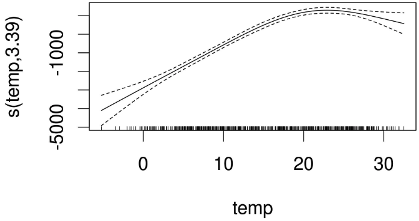
L’interprétation des effets lissés nécessite une vérification visuelle de la courbe ajustée. Les splines sont généralement centrées autour de la prédiction moyenne, de sorte qu’un point sur la courbe représente la différence par rapport à la prédiction moyenne. Par exemple, à 0 degré Celsius, le nombre prévu de vélos est inférieur de 3000 à la prédiction moyenne.
5.3.4 - Avantages
Toutes ces extensions du modèle linéaire constituent en elles-mêmes une sorte d’univers. Quels que soient les problèmes que vous rencontrez avec les modèles linéaires, vous trouverez probablement une extension qui les résout.
La plupart des méthodes sont utilisées depuis des décennies. Par exemple, les GAMs ont presque 30 ans. De nombreux chercheurs et praticiens de l’industrie sont très expérimentés avec les modèles linéaires et les méthodes sont acceptées dans de nombreuses communautés comme statu quo pour la modélisation.
En plus de faire des prédictions, vous pouvez utiliser les modèles pour faire de l’inférence, tirer des conclusions sur les données – à condition que les hypothèses du modèle ne soient pas violées. Vous obtenez des intervalles de confiance pour les poids, des tests de significativité, des intervalles de prédiction et bien plus encore.
Les logiciels statistiques ont généralement de très bonnes interfaces pour ajuster les GLMs, les GAMs et d’autres modèles linéaires plus spéciaux.
L’opacité de nombreux modèles d’apprentissage automatique provient de 1) un manque de parcimonie, ce qui signifie que de nombreuses caractéristiques sont utilisées, 2) des caractéristiques qui sont traitées de manière non linéaire, ce qui signifie que vous avez besoin de plus qu’un seul poids pour décrire l’effet, et 3) la modélisation des interactions entre les caractéristiques. En supposant que les modèles linéaires sont hautement interprétables mais souvent sous-ajustés à la réalité, les extensions décrites dans ce chapitre offrent un bon moyen d’atteindre une transition en douceur vers des modèles plus flexibles, tout en préservant une partie de l’interprétabilité.
5.3.5 - Inconvénients
Comme avantage, j’ai mentionné que les modèles linéaires vivent dans leur propre univers. Le nombre de façons dont vous pouvez étendre le simple modèle linéaire est écrasant, pas seulement pour les débutants. En réalité, il existe plusieurs univers parallèles, car de nombreuses communautés de chercheurs et de praticiens ont leurs propres noms pour des méthodes qui font plus ou moins la même chose, ce qui peut être très déroutant.
La plupart des modifications du modèle linéaire rendent le modèle moins interprétable. Toute fonction de lien (dans un GLM) qui n’est pas la fonction identité complique l’interprétation ; les interactions compliquent également l’interprétation ; les effets non linéaires des caractéristiques sont soit moins intuitifs (comme la transformation logarithmique) soit ne peuvent plus être résumés par un seul nombre (par exemple, les fonctions spline).
Les GLMs, les GAMs, etc. reposent sur des hypothèses concernant le processus de génération des données. Si celles-ci sont violées, l’interprétation des poids n’est plus valide.
La performance des ensembles basés sur des arbres comme la forêt aléatoire ou le boosting d’arbres par gradient est dans de nombreux cas meilleure que celle des modèles linéaires les plus sophistiqués. Cela repose en partie sur ma propre expérience et en partie sur des observations des modèles gagnants sur des plateformes comme kaggle.com.
5.3.6 - Logiciel
Tous les exemples de ce chapitre ont été créés en utilisant le langage R. Pour les GAMs, le package gam a été utilisé, mais il en existe beaucoup d’autres. R possède un nombre incroyable de packages pour étendre les modèles de régression linéaire. Inégalé par aucun autre langage d’analyse, R est le foyer de toutes les extensions concevables de l’extension du modèle de régression linéaire. Vous trouverez des implémentations de GAMs en Python (comme pyGAM), mais ces implémentations ne sont pas aussi matures.
5.3.7 - D’autres extensions
Comme promis, voici une liste de problèmes que vous pourriez rencontrer avec les modèles linéaires, accompagnée du nom d’une solution à ce problème que vous pouvez copier et coller dans votre moteur de recherche préféré.
Mes données violent l’hypothèse d’être indépendantes et identiquement distribuées (iid).
Par exemple, des mesures répétées sur le même patient.
Recherchez modèles mixtes ou équations d’estimation généralisées.
Mon modèle a des erreurs hétéroscédastiques.
Par exemple, lors de la prédiction de la valeur d’une maison, les erreurs du modèle sont généralement plus élevées dans les maisons coûteuses, ce qui viole l’homoscédasticité du modèle linéaire.
Recherchez régression robuste.
J’ai des valeurs aberrantes qui influencent fortement mon modèle.
Recherchez régression robuste.
Je veux prédire le temps jusqu’à la survenue d’un événement.
Les données de temps jusqu’à l’événement viennent généralement avec des mesures censurées, ce qui signifie que pour certaines instances, il n’y avait pas assez de temps pour observer l’événement. Par exemple, une entreprise veut prédire la défaillance de ses machines à glaçons, mais n’a des données que pour deux ans. Certaines machines sont encore intactes après deux ans, mais pourraient tomber en panne plus tard.
Recherchez modèles de survie paramétriques, régression de Cox, analyse de survie.
Mon résultat à prédire est une catégorie.
Si le résultat a deux catégories, utilisez un modèle de régression logistique, qui modélise la probabilité pour les catégories.
Si vous avez plus de catégories, recherchez régression multinomiale.
La régression logistique et la régression multinomiale sont toutes deux des GLMs.
Je veux prédire des catégories ordonnées.
Par exemple, les notes scolaires.
Recherchez modèle à cotes proportionnelles.
Mon résultat est un décompte (comme le nombre d’enfants dans une famille).
Recherchez régression de Poisson.
Le modèle de Poisson est également un GLM.
Vous pourriez également avoir le problème que la valeur du décompte 0 est très fréquente.
Recherchez régression de Poisson à inflation de zéros, modèle à obstacle.
Je ne suis pas sûr des caractéristiques à inclure dans le modèle pour tirer des conclusions causales correctes.
Par exemple, je veux connaître l’effet d’un médicament sur la pression artérielle. Le médicament a un effet direct sur certaines valeurs sanguines et cette valeur sanguine affecte le résultat.
Dois-je inclure la valeur sanguine dans le modèle de régression ?
Recherchez inférence causale, analyse de médiation.
J’ai des données manquantes.
Recherchez imputation multiple.
Je veux intégrer des connaissances préalables dans mes modèles.
Recherchez inférence bayésienne.
Je me sens un peu déprimé dernièrement.
Recherchez “Amazon Alexa Gone Wild!!! Version complète du début à la fin”.